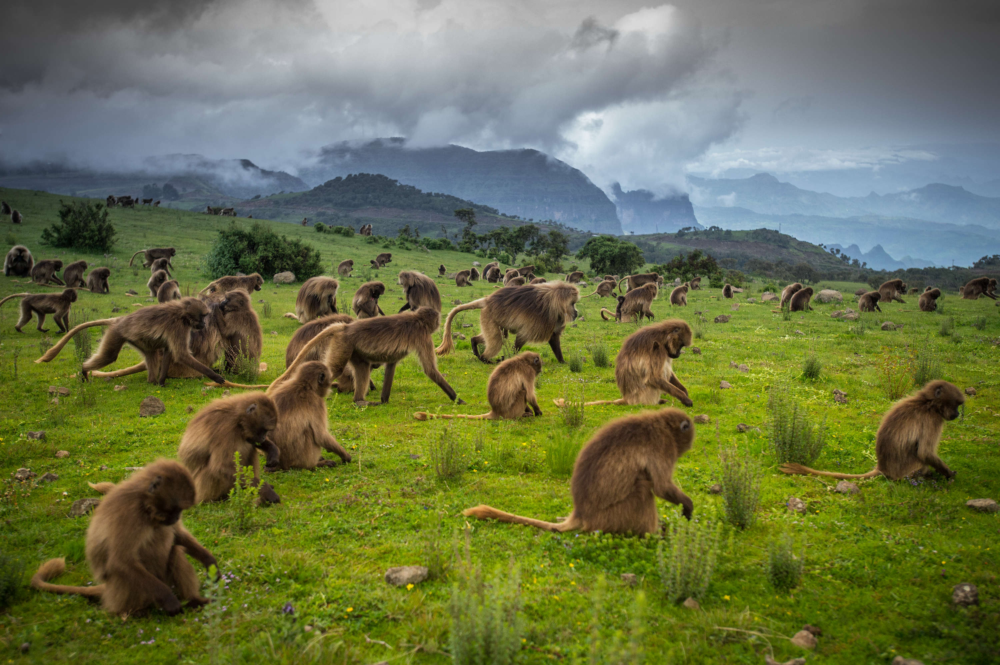
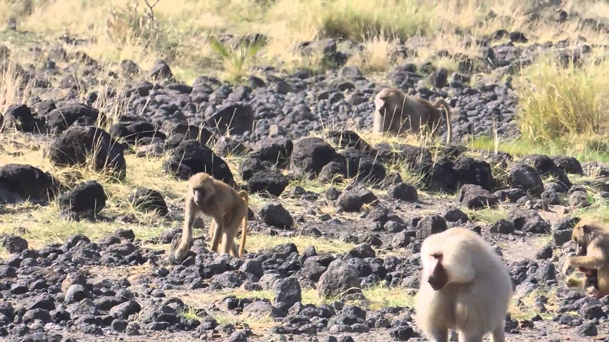

Simien National Park
This national park comprises the Simien Mountains in Ethiopia. It is the only natural site in the list of UNESCO World Heritage Sites in Ethiopia. It is also among
the first sites in Ethiopia to be recognized by UNESCO (inscribed in 1978). It was recognized for being the refuge for many endangered species living among
the Simien Mountains including the Walia ibex and Ethiopian wolf. However, it was also included in the list of World Heritage Sites in Danger in 1996.

Bale mountains park
The Bale Mountains, with their vast moorlands - the lower reaches covered with St. John's wort- and their extensive heathland, virgin woodlands, pristine
mountai streams and alpine climate remain an untouched and beautiful world. Rising to a height of more than 4,000 meters, the range borders Ethiopia's
southern highlands, whose highest peak, Mount Tullu Deemtu, stands at 4,377 meters.
The establishment of the 2,400-square-kilometre Bale Mountains National Park was crucial to the survival of the mountain nyala, Menelik's bushbuck and
the Simienred fox. This fox is one of the most colorful members of the dog family and more abundant here than anywhere else in Ethiopia. All three
endemic animals thrive inthis environment, the nyalain particular often being seen in large numbers. The Bale Mountains offer some fine high-altitude
horse and foot trekking, and the streams of the park - which become important rivers further downstream - are well-stocked with rainbow and brown trout.
Awash National park
Awash National Park is the oldest and most developed wildlife reserve in Ethiopia. Featuring the 1,800-metre Fantalle Volcano, extensive mineral hot-springs
and extraordinary volcanic formations, this natural treasure is bordered to the south by the Awash River and lies 225 kilometers east of the capital,
Addis Ababa. The wildlife consists mainly of East African plains animals, but there are now no giraffe or buffalo. Oryx, bat-eared fox, caracal, aardvark,
colobus and green monkeys, Anubisand Hamadryas baboons, klipspringer, leopard, bushbuck, hippopotamus, Soemmering's gazelle, cheetah, lion, kudu and
450 species of bird all live within the park's 720 square kilometers.
